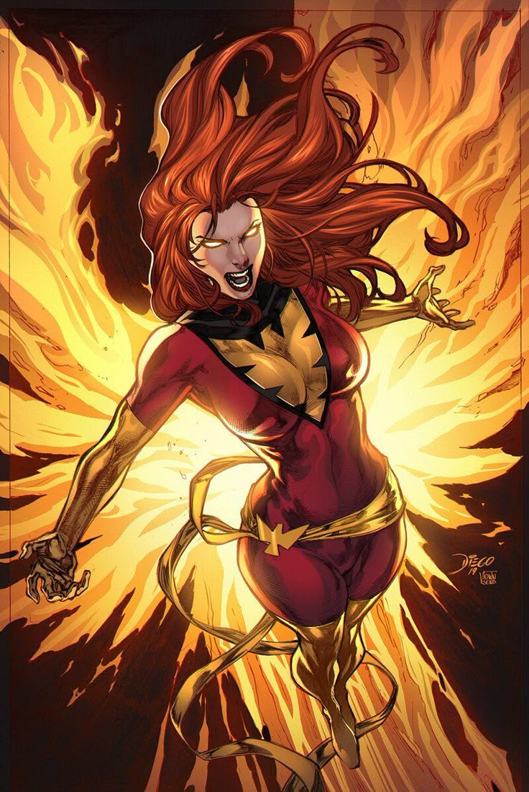

Jean Grey is one of the most powerful mutants in the Marvel Universe — known for her incredible telepathic and telekinetic abilities. Once a kind and compassionate member of the X-Men, she became the host of the Phoenix Force, a cosmic power of life, death, and rebirth.
As the Dark Phoenix, Jean’s strength grew beyond imagination — but so did her struggle to control the overwhelming energy within her. Her journey is one of courage, tragedy, and transformation.